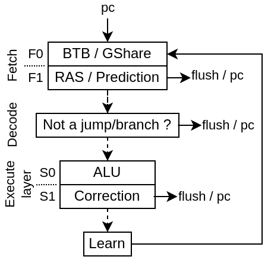

Branch
The branch prediction is implemented as follow :
During fetch, a BTB, GShare, RAS memory is used to provide an early branch prediction (BtbPlugin / GSharePlugin)
In Decode, the DecodePredictionPlugin will ensure that no “none jump/branch instruction”” predicted as a jump/branch continues down the pipeline.
In Execute, the prediction made is checked and eventually corrected. Also a stream of data is generated to feed the BTB / GShare memories with good data to learn.
Here is a diagram of the whole architecture :
While it would have been possible in the decode stage to correct some miss prediction from the BTB / RAS, it isn’t done to improve timings and reduce Area.
BtbPlugin
Will :
Implement a branch target buffer in the fetch pipeline
Implement a return address stack buffer
Predict which slices of the fetched word are the last slice of a branch/jump
Predict the branch/jump target
Predict if the given instruction is a branch, a jump or something else
Predict if the given instruction should push or pop the RAS (Return Address Stack)
Use the FetchConditionalPrediction plugin (GSharePlugin) to know if branch should be taken
Apply the prediction (flush + pc update + history update)
Learn using the LearnPlugin interface. Only learn on misprediction. To avoid write to read hazard, the fetch stage is blocked when it learn.
Implement “ways” named chunks which are statically assigned to groups of word’s slices, allowing to predict multiple branch/jump present in the same word
Note that it may help to not make the BTB learn when there has been a non-taken branch.
The BTB don’t need to predict non-taken branch
Keep the BTB entry for something more usefull
For configs in which multiple instruction can reside in a single fetch word (ex dual issue with RVC), multiple branch/jump instruction can reside in a single fetch word => need for compromises, and hope that some of the branch/jump in the chunk are rarely taken.
DecodePlugin
The DecodePlugin, in addition of just decoding the incoming instructions, will also ensure that no branch/jump prediction was made for non branch/jump instructions. In case this is detected, the plugin will :
schedule a “REDO trap” which will flush everything and make the CPU jump to the failed instruction
Make the predictor skip the first incoming prediction
Make the predictor unlearn the prediction entry which failed
BranchPlugin
Placed in the execute pipeline, it will ensure that the branch predictions were correct, else it correct them. It also generate a learn interface to feed the LearnPlugin.
LearnPlugin
This plugin will collect all the learn interface (generated by the BranchPlugin) and produce a single stream of learn interface for the BtbPlugin / GShare plugin to use.